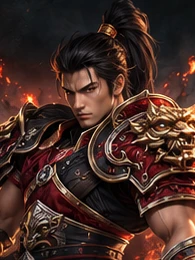
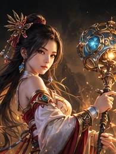
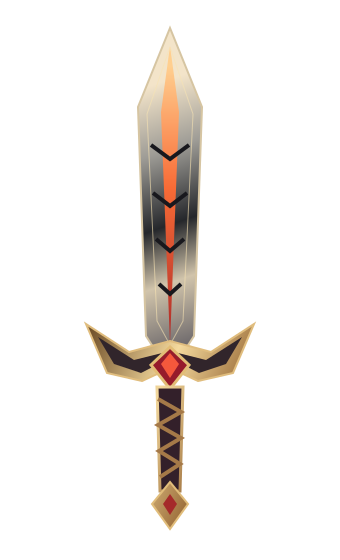

MET3 ONLINE / GÖRSEL HAREKET ÇALIŞMALARI
Durağan görseller.
Yaşayan atmosfer.
Kor ışığı, ağır akan sis ve sessiz bir enerji. Sayfaya sonradan yerleşebilen dört bağımsız hareket modülü.
Bu sayfa ana siteden bağımsızdır. Portreler sabit görseldir; gördüğün hareketler CSS katmanlarıdır. Gerçek video slotları eklenmeye hazır.
01 Character Spotlight Loop
Karakter tanıtımı / geniş bölüm
ÇELİĞİN HAFIZASI
Her efsane
bir iradeyle başlar.
Gölgelerin içinden yükselen bir duruş. Çeliğin soğuğunu, korların sıcaklığıyla buluştur.
SAVAŞÇI / CESARET · ÇELİK · İRADE
Düşük tempolu floating, fareyle hafif tilt, kor parçacıkları ve arka ışık. Karakterin üzerine dokunarak ışık vurgusunu sabitleyebilirsin.
02 Magic Aura Loop
Büyü / sınıf vitrini
GÖRÜNMEYENİN GÜCÜ
Kadim bir yankı.
İnce enerji yayları, nefes alan bir ışık ve usulca dağılan sis.

Yavaş dönen kesik enerji yayları. Mobilde tek yörünge ve daha az parçacık.
03 Weapon / Item Highlight
Ekipman / ödül kartı
ATEŞTEN KALAN
Kor Kılıcı.
Koyu metalin üzerinde kısa bir ışık taraması. Gücünü bağırmadan göster.

Silah siluetine maskelenmiş ışık taraması. Bu vektör çizim temsili bir vitrin objesidir; gerçek oyun eşyası değildir.
04 Ambient Background Loop
Bonus / geniş arka plan
DÜNYANIN NABZI
Sessizliği bile
bir hikâye anlatır.
İçeriğinin arkasında kalan yumuşak sis, seyrek kıvılcımlar ve ağır akan kızıl ışık.
Metin ve bağlantıları kapatmayan, geniş bölüm içine eklenebilen dekoratif atmosfer.
02 — ENTEGRASYON
Bir klasör.
Dört ayrı kullanım.
Dosyalar ve varlıklar aynı klasörde taşınabilir. Modül stilleri Shadow DOM içinde kalır; ana sitenin stillerine veya CMS nesnelerine yazmaz.
Entegrasyon rehberini aç<script type="module" src="/animation-lab/animations.js"></script>
<met3-motion variant="spotlight" label="Karakter vitrini">
<div slot="copy">
<h3>Kendi hikâyeni yaz.</h3>
<p>Bölüm açıklaman.</p>
</div>
<img slot="art" src="/gorselim.webp"
alt="Karakter açıklaması" loading="lazy">
</met3-motion>